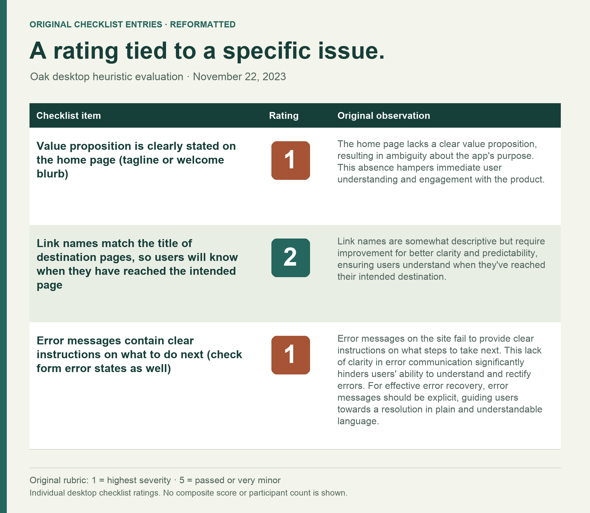

Oak AI / HEURISTIC EVALUATION · PRIORITIZATION
Make the usability risk specific enough to fix.
A structured desktop evaluation connected confusing entry points and easy-to-miss feedback to a prioritized product discussion.

THE PROBLEM
What needed to become clearer?
Oak’s early desktop experience used inconsistent labels and visual treatments, and some system feedback was difficult to notice. The team needed a concrete account of the usability risks and a way to decide what to address first.
MY CONTRIBUTION
Make the question answerable.
I evaluated the desktop experience in Chrome on a Mac, recorded findings in a structured heuristic checklist, and connected the findings to visual recommendations. I presented the research and helped organize a UX improvement list for backlog planning.
DECISION 01
Use an expert review to make the first risks visible.
A heuristic evaluation let me inspect the early interface systematically before planning a user study. I recorded what I observed beside the relevant criterion and rating. The review identified usability risks to discuss and test; it did not measure how frequently users encountered them.

DECISION 02
Connect an observation to the task it could interrupt.
The home screen presented training an assistant, starting a Vibecheck, and requesting support with competing labels and treatments. Capturing the interface beside the finding helped explain the risk: a new user could struggle to understand the available choices and where to begin.

DECISION 03
Give the team a recommendation it can challenge.
For login feedback, I connected a visibility issue to a specific recommendation: put an explanatory error near the field where the person can correct it. The report made the observed problem and proposed behavior easy to compare. That supported the team’s prioritization discussion and subsequent design work.
OUTCOME & REFLECTION
Findings the team could take into the backlog.
I delivered and presented the evaluation and recommendations on December 3, 2023, then helped turn the findings into a UX improvement list for backlog planning. The work gave the team concrete navigation and feedback issues to address in subsequent iterations; later mockup refinements were led by a design collaborator.
A finding is easier to use when the team can trace it from the interface, through the task at risk, to a proposed change. That trace also makes it easier to disagree productively.
The next question I would test
I would test the highest-risk tasks with first-time users: explain the product’s purpose, choose a starting point, and recover from a login error. Those observations would help revise the expert review’s initial priorities.
November 22, 2023 desktop checklist, November design recommendation report, and December 3 contribution record. This was an expert evaluation, not a participant usability test. Recommendations and later implementation are distinct; measured usability improvement is unverified.